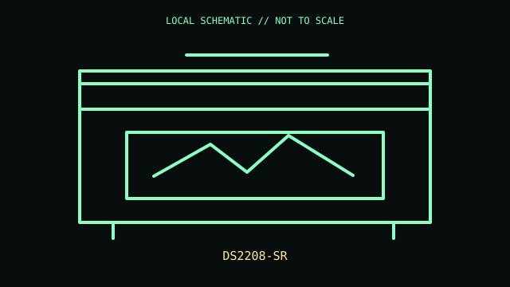

[ IMAGING AND AUDIO-CAPTURE PERIPHERALS // IDENTIFIED COMPONENT ]
Zebra DS2208-SR Handheld Barcode Scanner
Corded general-purpose 2D area imager for retail and barcode capture.

MODEL IDENTIFICATION: Exact model / identifier: DS2208-SR. Confirm label, package suffix, region, and revision against manufacturer documentation.
Model specifications
| Catalog subcategory | Imaging and audio-capture peripherals |
|---|---|
| Exact model / ID | DS2208-SR |
| Physical mechanism and primary specifications | Reads 1D and 2D symbologies; USB interface supported, with other interfaces via different cables; trigger and presentation modes. Full orderable suffix identifies cable/stand/region. |
| Host, interface, and driver caveats | Configuration barcodes and cable select USB HID keyboard, USB SNAPI, or other supported host modes; decoded data behavior depends on this selection. DS2278 is the cordless counterpart. |
| Revision identification | Record the complete printed SKU/PID, hardware revision, regional layout, and supplied accessories; similarly named variants may use different interfaces, drivers, or components. |
Preservation and service notes
Clean scan window with approved lens cloth; avoid scratches. Keep exact interface cable and programming guide with unit; do not pull cord at handle strain relief.
Record unit condition, accessories, host OS, software/firmware version, and test conditions separately from manufacturer-published specifications.
Primary manufacturer documentation
- Zebra DS2200 Series product pageManufacturer product or support documentation; verify exact model and regional revision against the device label.
- Zebra DS2208 support and downloadsManufacturer product or support documentation; verify exact model and regional revision against the device label.
Support pages can change; preserve the applicable manual and its revision with the physical equipment record.